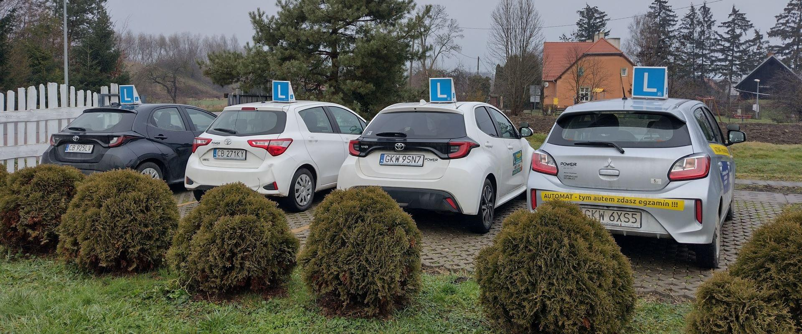

Kategoria B
Prawo Jazdy Kategoria B
Wbrew pozorom posiadacze prawa jazdy kategorii B mogą kierować wieloma
pojazdami, które w wielu przypadkach ważą znacznie więcej niż 3,5 t. W
obiegowej opinii kategoria B uprawnia do kierowania tylko tzw.
„osobówkami”, jednak uprawnienia te pozwalają na więcej
1. Motorowery - pamiętajcie że motorower MUSI
spełniać dwa warunki czyli max prędkość 45km/h i max pojemność
silnika 50cm3
2. Samochody osobowe - a dokładniej mówiąc: pojazdy
samochodowe o dopuszczalnej masie całkowitej nieprzekraczającej 3,5
t, z wyjątkiem autobusu i motocykla. W pojeździe może byc
przewożonych maksymalnie 8 osób i kierowca.
3. Cięgniki rolnicze bez względu na masę, jednak
bez przyczep. Można jednak ciągnąc rolniczy sprzęt podwieszany, np.
opryskiwacz.
4. Pojazdy wolnobieżne także bez względu na masę -
tutaj jednak trzeba pamiętać o tym, że możemy poruszać się pojazdem
wolnobieżnym, lecz używać specjalistycznego sprzętu zamontowanego na
nim możemy dopiero po skończonym kursie np. dla operatorów wózków
jezdniowych.
5. Pojazdy wolnobieżne - A ściślej motocykle o
pojemności skokowej silnika nieprzekraczającej 125 cm3, mocy
nieprzekraczającej 11 kW i stosunku mocy do masy własnej
nieprzekraczającym 0,1 kW/kg pod warunkiem, że osoba posiada prawo
jazdy kategorii B od co najmniej 3 lat .

Prawo Jazdy Kategoria B - automatyczna skrzynia biegów
Zalety pojazdu z automatyczną skrzynią biegów:
- bardzo wysoki komfort podróży. Kto raz jechał automatem, rzadko
powraca do ręcznej skrzyni biegów
- auto ma tylko dwa pedały - hamulca i gazu, lewa noga odpoczywa -
nie ma sprzęgła
- ruszamy z miejsca puszczając pedał hamulca, samochód spokojnie
ruszy również na wzniesieniu.
- Samochód nigdy nie zgaśnie na światłach, przy ruszaniu na
wzniesieniu ani podczas gwałtownego hamowania.
- Nie trzeba wykonywać żadnych czynności przy zmianie biegu – możemy
poświęcić więcej uwagi na to, co się dzieje wokół nas na drodze.
- Podjeżdżając do skrzyżowania tylko wciskamy pedał hamulca a gdy
się upewnimy o możliwości jazdy po prostu wciskamy pedał gazu –
wszystkie inne czynności wykonają się same, a my opuszczamy
skrzyżowanie bez stresu
- całe 30 godzin szkolenia praktycznego jest poświęcone na jazdę,
nie musimy się uczyć przez parę godzin jak ruszać z miejsca,
zmieniać biegi na wyższe i niższe, czy hamować tak, żeby nie
zadławić silnika.
- praktycznie każda fabryka samochodów produkuje modele aut ze
skrzyniami automatycznymi, zautomatyzowanymi lub bezstopniowymi,
którymi będziemy mogli jeździć
- Sądzisz że masz problemy manualne i ciężko Ci będzie połączyć
pracę nóg i rąk przy zmianie biegów z jednoczesnym zwracaniem uwagi
na szczegóły istotne dla jazdy.
- Zapisz się na kurs na samochodzie z automatyczną skrzynią biegów
Wady pojazdu z automatyczną skrzynią biegów:
- nie można prowadzić samochodów z manualną skrzynią biegów
Czy wiesz że:
Po ukończonym kursie egzamin zdajesz na tym samym samochodzie, na
którym uczyłeś się jeździć. Ponadto po nabraniu praktyki w ruchu
drogowym możesz zdać dodatkowy egzamin praktyczny na samochodzie z
ręczną skrzynią biegów i otrzymasz prawo jazdy kat. B bez ograniczeń.
Nie musisz uczęszczać w żadnym dodatkowym kursie teoretycznym ani
praktycznym. Nie ma też ponownego egzaminu teoretycznego.